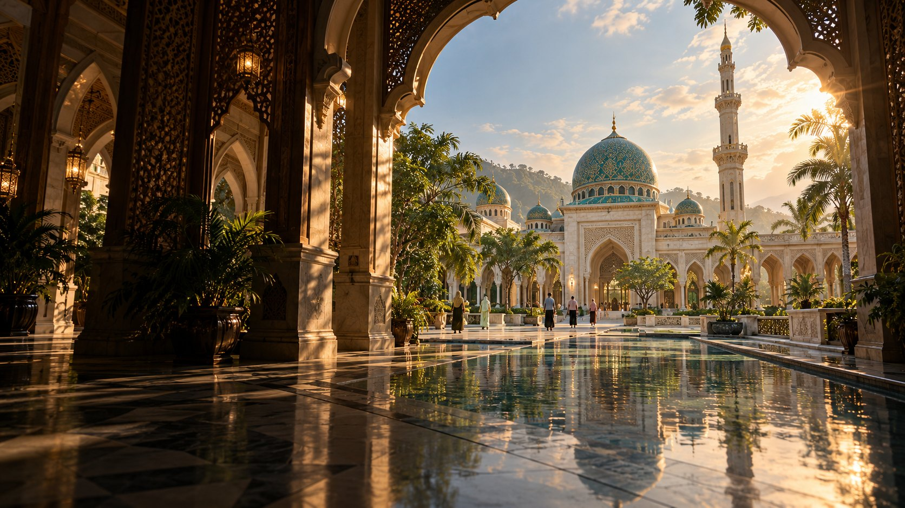
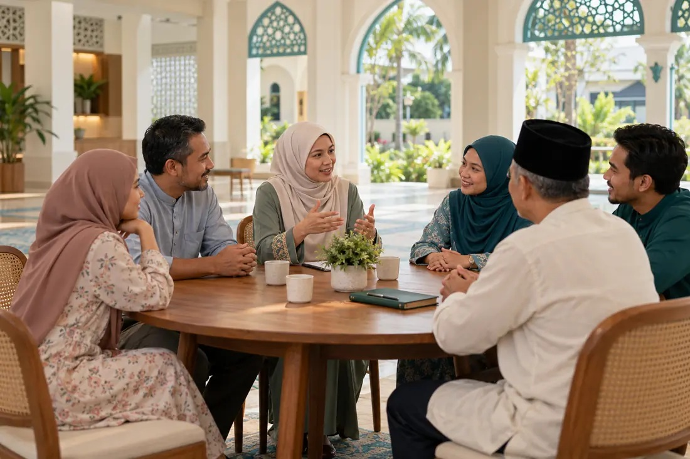
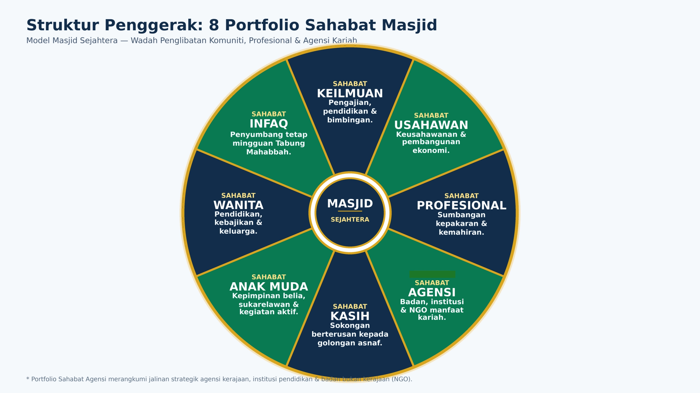

Iman
Membina Keimanan Insan

Membina Insan, Muafakat Masyarakat
Dan Kesejahteraan Bersama
Membina Keimanan Insan
Menyuburkan Kasih Sayang & Muafakat
Bersama Khidmat Demi Kesejahteraan Bersama
Membina insan yang mengenal Allah SWT dan menjadikan pengabdian kepada-Nya sebagai asas kehidupan.
Jemaah yang teguh iman, istiqamah beribadah, dan berakhlak mulia.
Membina insan teguh iman, menjaga ibadah & berakhlak

Menyatukan kariah dengan pengurusan yang amanah, tersusun dan berteraskan musyawarah.
Kariah yang saling mengenali, menyantuni keluarga, menjaga kebajikan dan mengurus amanah secara bertanggungjawab.
Melahirkan masyarakat berilmu, berkemahiran, cinta agama & tanah air, memahami sejarah serta menghargai budaya & warisan.
Masyarakat berdikari, memelihara warisan serta menyumbang kepada keamanan dan kesejahteraan bersama.
Model Masjid Sejahtera — Wadah Penglibatan Komuniti, Profesional & Agensi Kariah

Memfokuskan pembangunan spiritual dan pembentukan karakter individu bermula dari masjid.
Apabila Alif, Mim, dan Sin disatukan, masjid tidak lagi sekadar ruang persinggahan, tetapi bertukar menjadi nadi yang menggerakkan peradaban — bermula dengan pemerkasaan jiwa, disatukan oleh muafakat, dan dilebarkan jangkauannya demi kesejahteraan umat manusia.